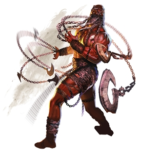

Chain Devil
This ominous fiend wears chains like a shroud. Driving lesser creatures before it with its fearsome gaze, a chain devil animates the chains that cover its body as well as inanimate chains nearby, which sprout hooks, blades, and spikes to eviscerate enemies.
Chain devils act as sadistic jailers and torturers in the infernal realms, relishing pain and living to inflict it on others. They are called on to torment mortal souls trapped in the Nine Hells, inflicting their sadistic fury on the horrid lemures in which those souls manifest.